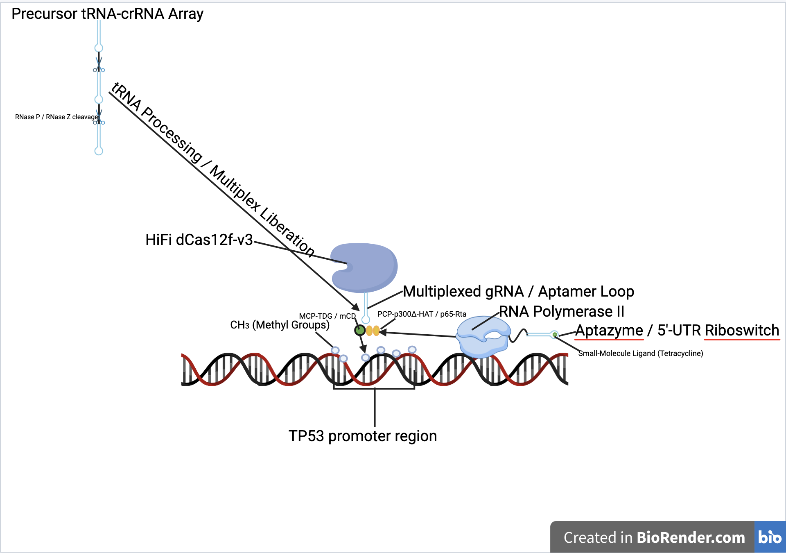

Open-access research initiative
SynBio designs and mathematically models genetic circuits that target complex diseases like cancer — then publishes the code and predictive models completely free, so scientists anywhere can use them.
The method
No institutional lab access required. Every circuit on SynBio is designed and stress-tested entirely with free, open computational tools before a single base pair is proposed.
Genetic logic is composed from documented parts — sensors, promoters, effector proteins — mapped to a specific disease mechanism.
Python and MATLAB are used to simulate circuit dynamics — production, degradation, feedback — and predict how the system behaves before it's built.
Code, parameters, and assumptions are published openly under permissive licenses, so any researcher can reproduce, question, or extend the work.

A theoretical, feedback-controlled circuit that uses a compact dCas12f scaffold to dynamically regulate p53 transcriptional activity — without editing the underlying DNA — across four environmental logic states, from basal silencing to high-activation under oncogenic stress.
Get involved
SynBio is built to scale beyond one project. If you've designed or modeled a genetic circuit, submit it for review — or join the researcher registry to collaborate on future work.
Replace this button's link with your Google Form or Tally form URL once it's set up.
Open submission form →